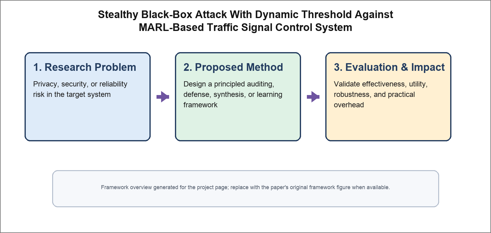

Stealthy Black-Box Attack With Dynamic Threshold Against MARL-Based Traffic Signal Control System
IEEE Transactions on Industrial Informatics (TII), 2024

Abstract
Deep reinforcement learning has shown promise for adaptive traffic signal control, but existing attacks on DRL-based systems are mostly static and easier to detect. We propose a stealthy black-box attack with a dynamic threshold against multi-agent reinforcement learning (MARL)-based traffic signal control. The attacker adaptively triggers perturbations according to traffic-state dynamics to degrade control performance while reducing detectability. Experiments on benchmark traffic simulators show significant congestion amplification and strong stealth characteristics compared with prior attacks.
Resources
Citation
@inproceedings{RZDZZL24,
author = {Yan Ren and Heng Zhang and Linkang Du and Zhikun Zhang and Jian Zhang and Hongran Li},
title = {{Stealthy Black-Box Attack With Dynamic Threshold Against MARL-Based Traffic Signal Control System}},
booktitle = {{Transactions on Industrial Informatics}},
publisher = {IEEE},
year = {2024},
}